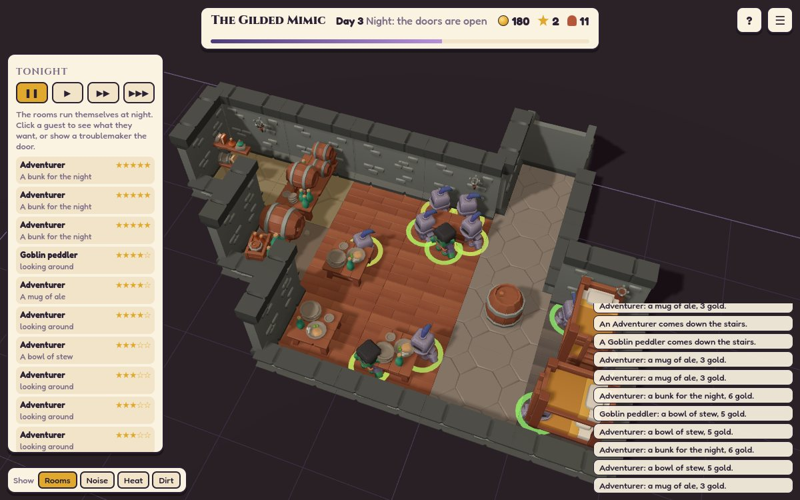
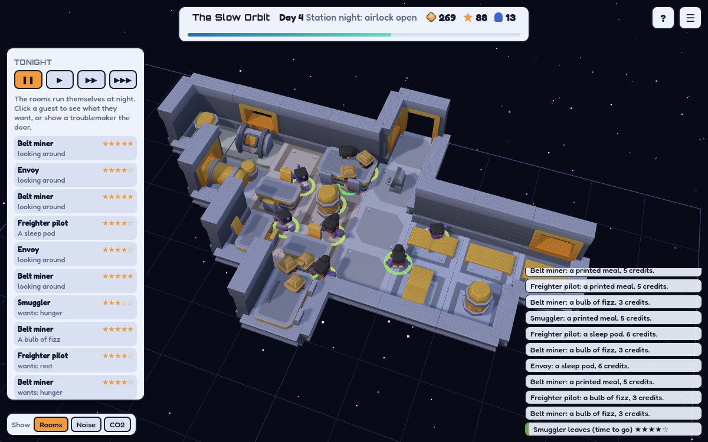

An inn-keeping engine whose rules are scripts. By day you dig rooms and furnish them; by night the doors open and guests come in with needs, a purse and limited patience.
The engine knows nothing about ale or dungeons. A ruleset, a folder of plain-text files, declares the inn, its rooms, furniture, guests and what they pay for; the economy between them is written in GlassBox.

The first ruleset: an inn on the third level of the dungeon, for adventurers, dwarf miners, wizards and goblin peddlers on their way down. It runs in your browser, saves itself as you play, and a season is seven nights.

The same engine with a different ruleset: a bar and bunkhouse on a refuelling ring at the edge of a mining belt. Freighter pilots, belt miners, courier robots and visiting envoys come aboard at station night.
Every dug cell is a GlassBox place, joined to its neighbours. Layers such as Noise, Heat and Dirt spread between cells and fade, so a rowdy taproom keeps the dormitory next door awake.
Furniture and stations are GlassBox units running ordinary unit rules: the keg rack taps barrels, the hearth cooks stew and warms the rooms around it, the washtub scrubs the floors.
Phases set global resources when they start
(set Night 1), so a rule that should run only at night tests
global Night atLeast 1.
Guests are what GlassBox has no words for: needs that grow every tick, dislikes, a purse, patience and a mood. Their reviews move the inn's reputation.
A service, in the language of inn.inn:
service ale
name A mug of ale
at bar # unit kinds that offer it
need Thirst 60 # takes this much off the need
global Ale in 1 # uses up one of the inn's stores
price 3 # paid into the inn's money
time 4 # ticks the guest stays at the bar
map Noise out 3 radius 1 # and the noise it makes
endAnd the rule that keeps it going, in GlassBox (economy.gbx):
# The keg rack taps a barrel when the bar runs low; every mug costs the inn a little gold.
unitRule tap
appliesTo kegs
rate 2
global Night atLeast 1
global Ale less 12
global Gold in 0.6
global Ale out 1
endEvery block a ruleset can declare: inn, phase, layer, room, unit, need, service and guest, with their keys.
Commands, events and snapshots; the engine from Rust and in the browser; determinism and saves.
The complete source of The Gilded Mimic and The Slow Orbit, to read or to copy as the start of your own inn.
The engine, the browser game and the rulesets on GitHub, under the GPL.
Both inns play as a seven-night season or in endless mode, with levels joined by stairs, inner walls and doors that stop noise and stale air, and buildings that import from and export to watabou's Dwellings.
Coming: staff to hire for the night, and more rulesets.